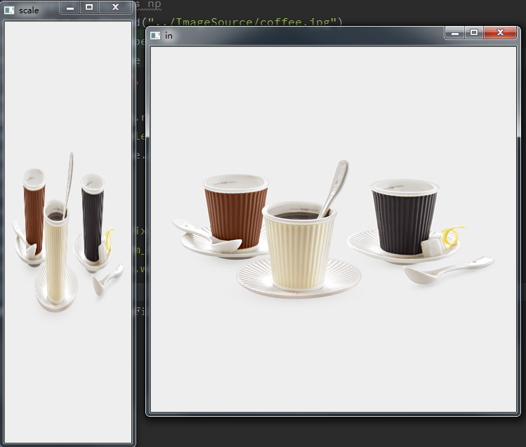
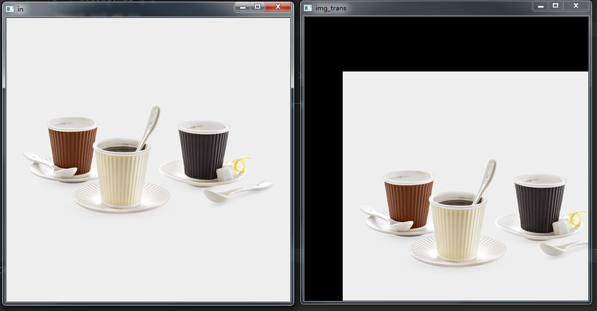
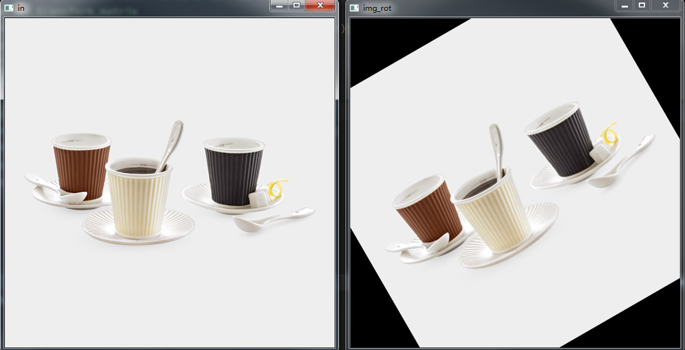
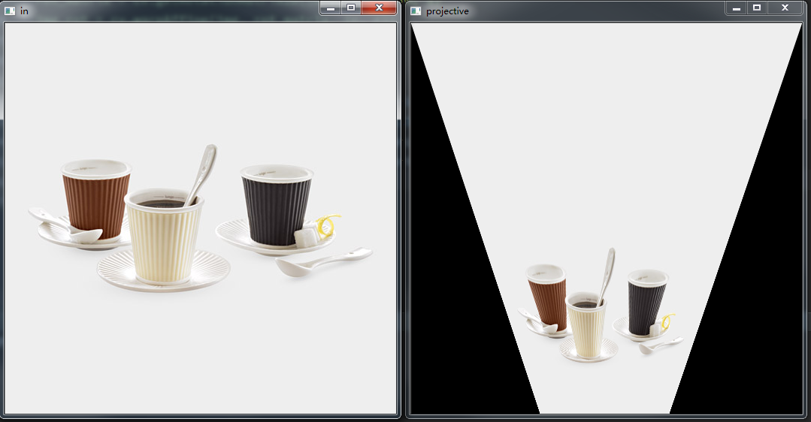

图像形状变化
1.图像大小变化
将某点 (x,y) 经扩大或缩小后，变化到 (X,Y) 所在的位置上。
变换矩阵
2.位置的变化
像素平移
变换矩阵
3.图像的旋转
逆时针旋转θ角度的表达式
变换矩阵
4.齐次坐标
任何变换都可以由此齐次变换得到
Example
-图像缩放
# -*-coding:utf-8-*-
import cv2 as cv
import numpy as np
img = cv.imread("../ImageSource/coffee.jpg")
r, c = r, c = img.shape[:2]
cv.imshow("in", img)
#图像缩放
img_scale = cv.resize(img, (180, 600), 1, 1, cv.INTER_LINEAR)
cv.imshow("scale", img_scale)
print img_scale.shape

-图像平移
transform_matrix = np.array([[1, 0, 70], [0, 1, 100]], np.float)
print transform_matrix
img_trans = cv.warpAffine(img, transform_matrix, (c, r))
cv.imshow("img_trans", img_trans)
cv.waitKey(0)

-图像旋转
rot_matrix = cv.getRotationMatrix2D((c/2, r/2), 30, 1)
img_rot = cv.warpAffine(img, rot_matrix, (c, r))
cv.imshow("img_rot", img_rot)

-投影变换
src_point = np.array([[0, 0], [c-1.0, 0], [0., r-1.0], [c-1.0, r-1.0]], np.float32)
dst_point = np.array([[0, 0], [c-1.0, 0], [int(0.33*c), r-1], [int(0.66*c), r-1]], np.float32)
projective_matrix = cv.getPerspectiveTransform(src_point, dst_point)
img_out = cv.warpPerspective(img, projective_matrix, (c, r))
cv.imshow("projective", img_out)
